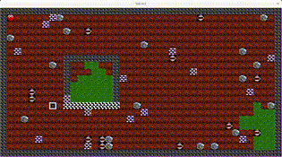
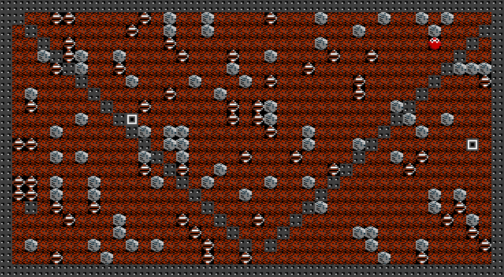
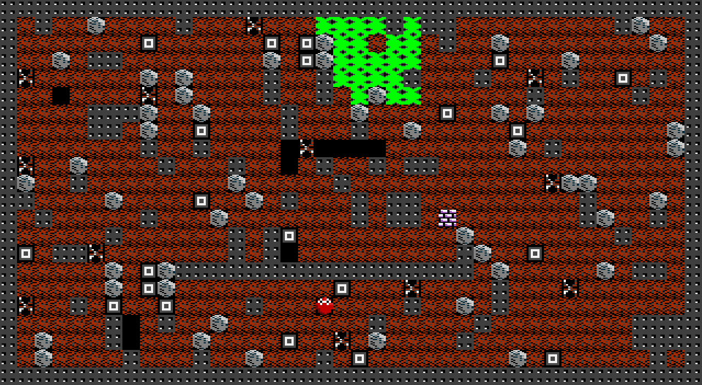

updated at 2021-02-04 by wojtek at bitologia.org (index)
Once there was a code written in... Tcl. It worked:

alas the overall quality was really poor. Tcl is not adapted for such projects. Due to many functional errors and very bad practices that should not be reproduced anymore, the entire source has been deleted. Soon (~2022), it will be rewritten by means of a more appropriate tool.
Screens with configuration taken from BD-CHAOS:

